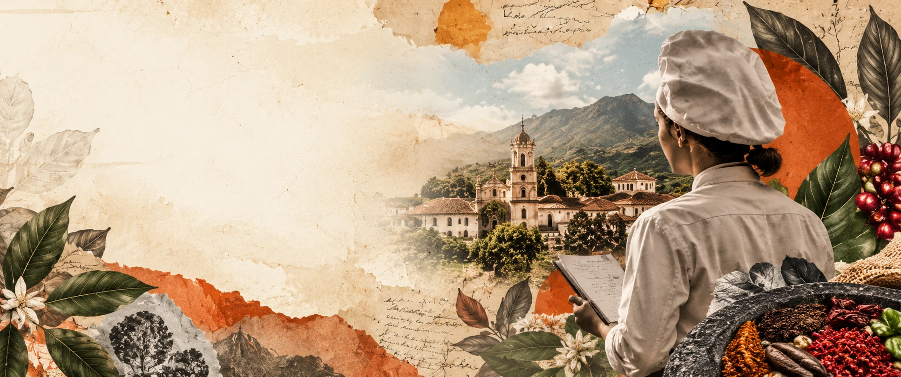

Opciones
de grado
Conoce las modalidades de grado disponibles, sus requisitos y los pasos institucionales para elegir la alternativa que corresponde a tu nivel de formación.
Explorar modalidadesUna etapa para llevar tus conocimientos a la práctica.
De acuerdo con el artículo 23 del Reglamento Estudiantil, la opción de grado es un requisito obligatorio para optar por el título de cada nivel de formación, ya sea porque se encuentra en el plan de estudios del programa o porque es un requerimiento de titulación.
Revisa las alternativas y verifica con la coordinación las condiciones, fechas y documentos vigentes antes de realizar tu inscripción.
¿Qué opciones aplican?
La disponibilidad cambia según el nivel de formación.
| Nivel de formación | Opciones indicadas en el material institucional |
|---|---|
| Técnico profesional | Trabajo de gradoAyudantía de investigaciónSeminario |
| Tecnológico | Trabajo de gradoPasantía de investigaciónAyudantía de investigaciónCreación o innovación de empresaSeminario |
| Profesional universitario | Trabajo de gradoPasantía nacional o internacionalAyudantía de investigaciónCreación de empresaSeminario |
Esta tabla reproduce las opciones descritas en la presentación suministrada. Confirma la oferta vigente de tu programa y nivel con la coordinación antes de hacer el trámite.
Preinscríbete a tu opción de grado
Una vez realizada la inscripción, recibirás instrucciones para la opción que indiques. El formulario funciona únicamente con el correo institucional que termina en @sanmateo.edu.co.
Antes de diligenciarlo, revisa los requisitos y consulta las fechas establecidas por la institución.
Consulta los reglamentos
Accede a los lineamientos institucionales que orientan los procesos de extensión e investigación.
Consulta las disposiciones institucionales relacionadas con los procesos de extensión.
Abrir documento ↗ 02 PDFReglamento de investigaciónRevisa los lineamientos que regulan las actividades y los procesos de investigación.
Abrir documento ↗ 03 CONTACTOContactar a coordinaciónEscribe al equipo de investigación de Gastronomía para resolver tus dudas.
investigaciongastronomia@sanmateo.edu.coEnviar correo ↗